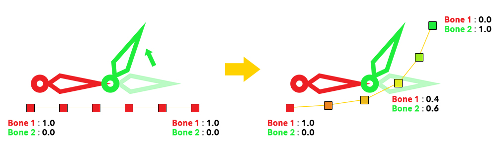
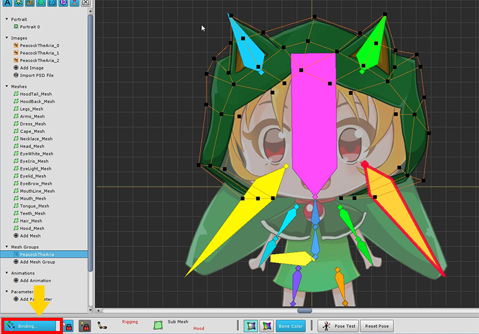
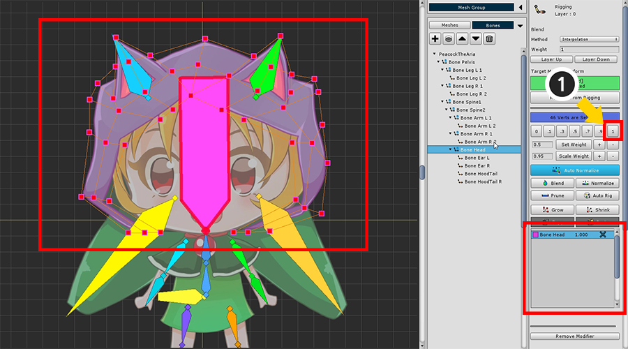
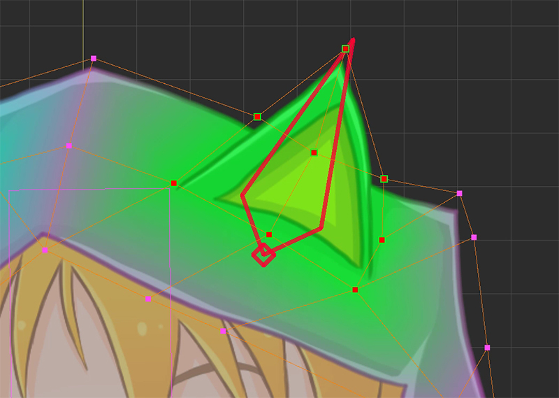
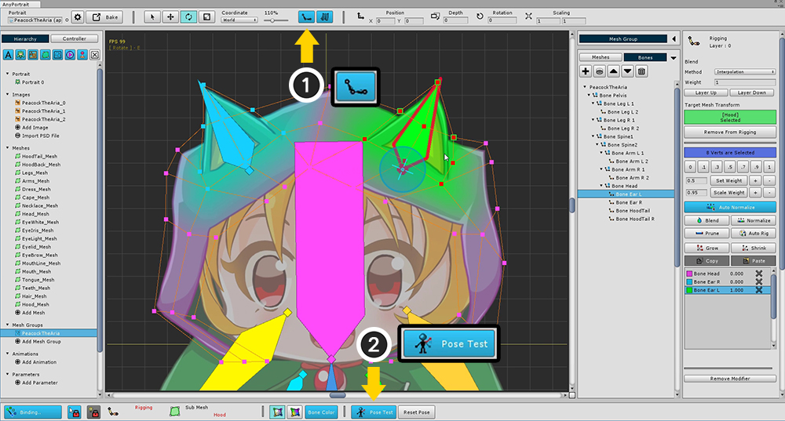
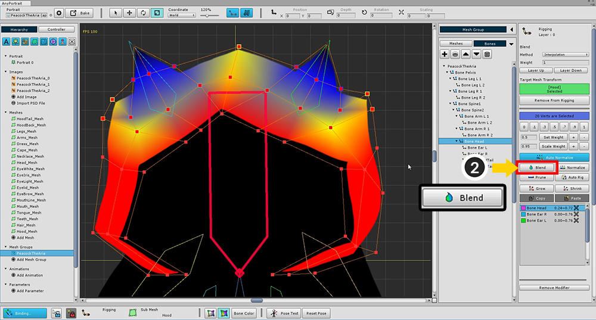

AnyPortrait > 入門ガイド > 2.5. 「Rigging Modifier」を使用
2.5. 「Rigging Modifier」を使用
1.0.0
骨のアニメーションでは、「Rigging(リギング)」と呼ばれるプロセスが不可欠です。
Riggingは、「頂点をボーンに接続する」として定義できます。

頂点が骨の動きに追従するように、頂点に「骨に付けられた重さ」を入力することが重要です。
左の図では、すべての頂点の重みが「Bone 1：1.0」です。
したがって、「緑の骨(Bone 2)」の動きには依存しません。
右側では、頂点の重みが徐々に「Bone 2」に増加しています。
あなたは 「緑の骨(Bone 2)」の滑らかな動きを見ることができます。
>TXT
つまり、「Rigging」は、「頂点+骨」の接続ウェイトを設定するプロセスです。

「Rigging」モディファイアを追加します。
(1) 「Add Modifier」ボタンを押して (2) 「Riggingモディファイア」を選択して追加します。

まず、ヘッドフードを改造します。
(1) 「Hood」メッシュを選択し、(2) 「Add to Rigging」ボタンを押してメッシュをモディファイアに登録します。

画面の左下にある「Binding」ボタンを押してRiggingを開始します。
RiggingツールのUIは以下のように構成されています。
1. 메시 등록/해제 : 메시를 리깅 모디파이어에 등록하거나 해제합니다.
2. 가중치 직접 지정 : 버튼의 값으로 가중치가 지정됩니다.
3. 가중치 툴 : 가중치를 지정하는 툴들입니다.
Set Weight : 왼쪽에 작성된 숫자만큼 가중치를 지정합니다.
Set Weight +/- : 0.05 단위로 가중치를 더하거나 뺍니다.
Scale Weight : 왼쪽에 작성된 숫자만큼 가중치를 곱합니다.
Scale Weight +/- : 가중치에 1.05를 곱하거나(+ 버튼), 0.95를 곱합니다. (-버튼)
4. 가중치 보조 툴 : 선택된 버텍스의 가중치를 지정할 때 도움을 주는 툴입니다.
Auto Normalize : 이 기능이 활성된 상태에서는 가중치 합이 1로 보정됩니다.
Blend : 버텍스의 가중치를 주변 버텍스 값과 적절히 섞어서 부드럽게 만듭니다.
Normalize : 가중치 합이 1이 되도록 보정합니다.
Prune : 매우 낮은 가중치 값을 가지는 본 정보를 삭제합니다.
Auto Rig : 등록된 본 정보를 바탕으로 자동으로 리깅을 합니다.
5. Grow / Shrink : 버텍스를 더 선택하거나 제외 시켜서 범위를 조절합니다.
6. Copy / Paste : 선택된 버텍스의 리깅 정보를 복사하거나 붙여넣습니다.
7. 본 리깅 정보 : 리깅에 등록된 본과 리깅 값입니다. X 버튼을 눌러서 본을 제외시킬 수 있습니다. 이 화면에서도 직접 본을 선택할 수 있습니다.
1. 追加 / 削除 : メッシュを「Riggingモディファイア」に登録または登録解除します。
2. 手動で重量を設定 : 重量は、ボタンの値によって割り当てられます。
3. 重みツール : 重みを設定するためのツールです。
Set Weight : 左側の数字としてウェイトを割り当てます。
Set Weight +/- : 重量は0.05単位で加算または減算されます。
Scale Weight : 体重に左の数字を掛けます。
Scale Weight +/- : 重量1.05（+ボタン）を乗算または0.95を乗算します。（ - ボタン）
4. Assistant tools : このツールは、選択した頂点の重みを指定するのに役立ちます。
Auto Normalize : これが有効な場合、重み付けされた合計は1に補正されます。
Blend : 周囲の頂点値と適切に混合することによって、頂点のウェイトを滑らかにします。
Normalize : 加重和を1に較正します。
Prune : 重みが非常に低いの情報を削除します。
Auto Rig : 登録された骨の情報に基づいて自動的に「Rigging」。
5. Grow / Shrink : 頂点をさらに選択または除外して範囲を調整します。
6. Copy / Paste : 選択した頂点の「Rigging」情報をコピーまたは貼り付けます。
7. 「Rigging」情報 : 「Rigging」に登録された「骨」と「重量」の値。 Xボタンを押して骨を除外することができます。 この画面から骨を選択することもできます。


画面下部のUIで「Rigging重みを表示する4つのモード」を選択することができます。
骨の色を使用するか、またはテクスチャを一緒に表示するかどうかを決定することができます。

(1) すべての頂点を選択し、(2) 「Bone Head」を選択します。
骨が選択されていない場合は、「選択ロック(Selection Lock)」をオフにするか、右のメニューから選択します。

「Bone Head」のすべての頂点の重みを1に設定します。
メッシュの色が頭の骨の色のように変わるのを見ることができます。

簡単に (1) 「選択ロック」を解除し、(2) 「Bone Ear R」を選択します。
「選択ロック」を解除しない場合は、右のメニューから選択してください。
頂点を選択すると、(3) 重みを0.5に設定します。
「Bone Ear R」のRigging情報が登録されていることがわかります。

反対側の耳にもウェイトを割り当てます。

もう一度 「Bone Head」を選択してください。 すべての頂点を選択し、ウェイト1を割り当てます。

「Bone Ear R」を選択し、周囲の頂点を選択して、ウェイト1を割り当てます。

重みは、耳の周りにのみ適用され、色を変更します。

同様に、反対側の耳にウェイトを割り当てます。
「リギング」は一度に完了するのが難しい作業です。
体重が指定されていても、実際に骨を動かすときには、厄介な点を見るのは簡単です。
したがってRiggingモディファイヤは、一時的に骨を動かすことができる「Pose Test」機能を提供します。
「Pose Test」機能を使用して、ウェイトが正しく適用されているかどうかを確認し、修正を試みます。

まず、骨が画面に表示される確認します。
(1) 骨が「色が満たされた状態」に表示します。
(2) 「Pose Test」ボタンを押します。

骨を選択して自由に動くことができます。
それが「重量」に正しく割り当てられていることを確認してください。
現在の状態での「Rigging」はスムーズに適用されていない。
あなたはそれを円滑にし、問題の領域を修正する必要があります。

「Pose Test」ボタンを押して無効にし、再度重量を修正します。
(1) 耳の周りのすべての頂点を選択します。

(2) 「Blend」ボタンを数回押して、重量値を柔らかくします。
（体重値を"Bone Color Off + Texture Off"に変更しました）

ウェイトは以前よりもスムーズに分散されていることがわかります。

もう一度試してみましょう。
(1) 「Pose Test」モードをオンにします。
(2) 耳を傾けて重み値が正しく適用されているかどうかを確認する。
このサンプルでは、キャラクターの片側が傾いており、反対側も動いていることがわかります。
他方の頂点が動いてはいけないと仮定してみましょう。
（「Rigging」はデザイナーの意図によって異なる）

(3) 頭部の中心の頂点を選択する。

(4) 「Bone Head」を選択し、(5) 「Set Weight +ボタン」を数回押してウェイトを追加します。

(6) 耳の頂点の1つを選択し、(7) 耳(Bone Ear R / L)を選択します。
体重が中心を超えて適用されていることがわかります。

(8) 重み0を設定します。
反対側の耳と頂点についても同じようにします。

「Riggingモディファイア」に他のメッシュを追加します。
顔メッシュは頭部（Bone Head）にのみ登録する必要があります。

他のメッシュは、「Pose Test」を適切に使用しながら調整されます。
下のスクリーンショットは、各骨の「Rigging」の結果を示しています。
「Rigging」については、これらを参照してください。